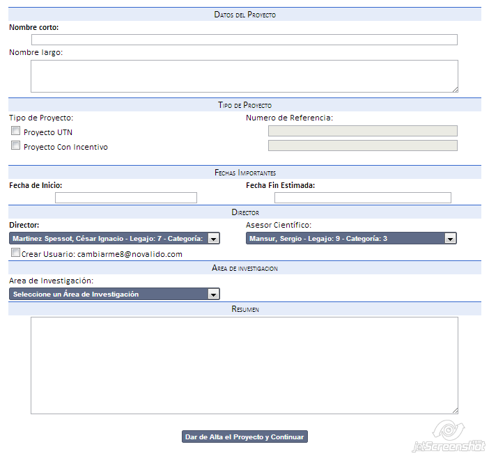
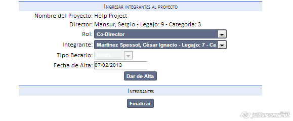

Alta de Proyecto
El alta consiste en llenar los campos necesarios para poder registrar un nuevo proyecto en el sistema.
En negrita se representan los datos que son obligatorios.
- Llene los datos del proyecto.
- Incluya si es un proyecto es categorizado, seleccionando el checkbox que habilitará el campo de Número de Referencia.
- Seleccione el Director, en caso de necesitar Asesor Cientifico el combo se llenará con las opciones
- Tenga en cuenta que si quiere dar de alta el director, deberá seleccionar el checkbox.
- Presione Dar de alta y continuar para ir a la siguiente pantalla.
- Solo se accederá si los datos son correctos. En caso de no serlos será avisado para poder corregirlos.

3. Ingresar integrantes al proyecto:
- Ingresar el rol.
- Seleccionar el investigador/becario.
- Seleccionar la fecha de alta (actual por defecto).
- Presionar agregar (se mostrarán en la tabla inferior).
- Presionar finalizar para conservar los cambios.
4. Será redirigido a la administración de proyectos.

*Estas mismas pantallas son utilizadas para la modificación de los datos
Created with the Personal Edition of HelpNDoc: Free EPub producer